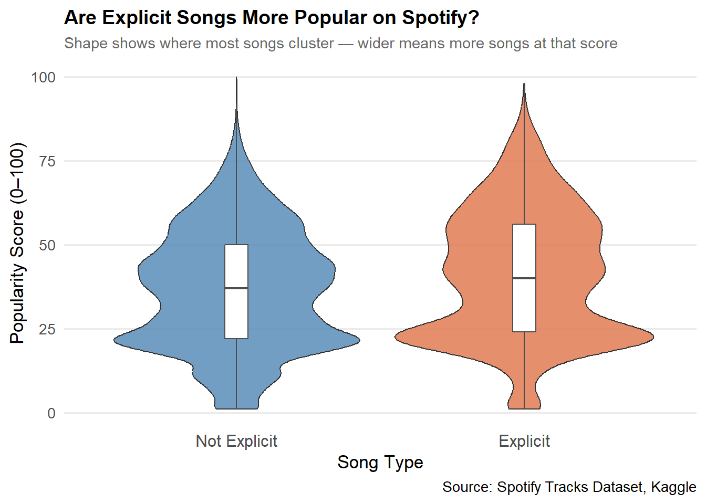
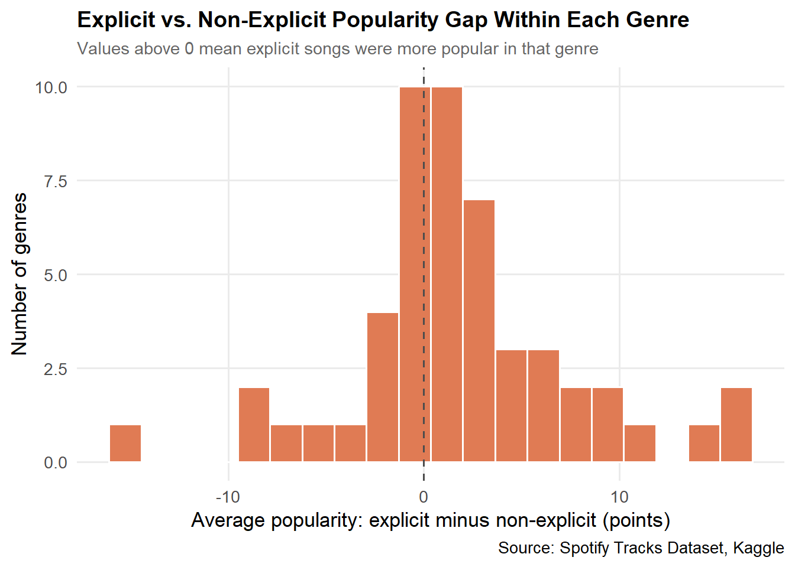

Explicit content: Explicit songs had a median popularity of 40 vs 37 for non-explicit songs (a difference of 4.2 points in the average). Within individual genres, explicit songs scored higher in 33 of 51 genres.
Loudness: The Spearman correlation between loudness and popularity is 0.08, a very weak relationship. The quietest songs actually had the highest average popularity, but that group is small (560 songs).
Acousticness: Medium-acousticness songs were the most popular on average (40.0), ahead of low (36.9) and high (35.4). After controlling for genre, acousticness showed no clear relationship with popularity.
Genre matters: Genre alone explains 47.1% of the variation in popularity, while explicit content, loudness, and acousticness together explain only 1.1%.
Data Description
For this project, I used the Spotify Tracks Dataset from Kaggle. The raw dataset contains 114,000 rows of tracks available on Spotify, including audio characteristics and a popularity score assigned by the platform for each track. The same song can appear in more than one row (for example, under different genres), which I handle during cleaning so that each song is counted once.
The key variables I used in this analysis are:
track_name: The name of the song
artists: Who performed the song
popularity: A number from 0 to 100 showing how popular the song is on Spotify. Higher means more popular
explicit: Whether the song contains explicit content (True or False)
loudness: How loud the song is, measured in decibels. Most songs fall between -50 and 0
acousticness: How acoustic the song sounds, from 0 (fully electronic) to 1 (fully acoustic)
track_genre: The genre the song belongs to
The three questions I set out to answer were:
Do explicit songs tend to be more popular than non-explicit songs?
Do louder songs tend to be more popular?
Are acoustic songs less popular than electronic-sounding ones?
After answering each question on its own, I combine everything into one model to see which factors still matter once the others are held constant.
Data Cleaning
To get the data ready for analysis, I went through several cleaning steps. First, I kept only the columns that were directly relevant to my research questions and removed everything else like track IDs and album names. Then I filtered out songs with missing values or a popularity score of zero, since zero-popularity songs are usually not publicly available and would throw off the results. I reformatted the explicit column from plain text into a properly labeled category so it would display cleanly in visualizations. I also grouped the acousticness variable into three levels (Low, Medium, and High) since it is easier to compare groups than individual decimal numbers. Finally, I removed duplicate songs so each track only appears once and calculated average popularity for each acousticness group to use in the bar chart.
After cleaning, the dataset went from 114,000 rows to 76,585 unique songs. One side effect of removing duplicates is that a song listed under several genres keeps only one genre label, so genre labels are approximate.
Question 1: Do Explicit Songs Tend to Be More Popular?
Some people assume that songs with explicit content attract more listeners because they tend to appear in hip-hop and pop, which are two of the most streamed genres on Spotify. I start with the numbers for each group, then use a violin plot to compare the full range of popularity scores, showing not just the averages but also how spread out the scores are for each group.
Table 1: Popularity summary for explicit and non-explicit songs.
Song Type
Songs
Mean
Median
Std. Dev.
Not Explicit
69,963
36.8
37
17.7
Explicit
6,622
41.0
40
19.3
spotify_clean |>ggplot(aes(x = explicit,y = popularity,fill = explicit ) ) +geom_violin(trim =TRUE,linewidth =0.4,alpha =0.85 ) +geom_boxplot(width =0.08,fill ="white",color ="gray30",linewidth =0.4,outlier.shape =NA ) +scale_fill_manual(values =c("Not Explicit"="#5B8DB8","Explicit"="#E07B54" ) ) +labs(title ="Are Explicit Songs More Popular on Spotify?",subtitle ="Shape shows where most songs cluster — wider means more songs at that score",x ="Song Type",y ="Popularity Score (0–100)",caption ="Source: Spotify Tracks Dataset, Kaggle" ) +theme_minimal(base_size =13) +theme(plot.title =element_text(face ="bold", size =14),plot.subtitle =element_text(color ="gray40", size =11),legend.position ="none",panel.grid.major.x =element_blank(),panel.grid.minor =element_blank(),axis.text.x =element_text(size =12) )

Figure 1: Violin plot comparing popularity score distributions between explicit and non-explicit songs on Spotify.
Explicit songs have a median popularity of 40 compared with 37 for non-explicit songs. On average, explicit songs score 4.2 points higher than non-explicit songs (p < 0.001 on a Wilcoxon rank-sum test). Because the dataset is so large, even tiny differences come out statistically significant, so the size of the gap matters more than the p-value. Here it is a small difference on a 100-point scale. The violins also show that most songs in both groups cluster in the low-to-mid popularity range, with fewer songs reaching the very top.
Is it explicitness, or is it genre?
Explicit songs are not spread evenly across genres, so the overall gap could simply reflect which genres they appear in. To check, I compared explicit and non-explicit songs within each genre that had at least 30 songs of each type (51 genres).
genre_diff |>ggplot(aes(x = diff)) +geom_histogram(bins =20, fill ="#E07B54", color ="white") +geom_vline(xintercept =0, linetype ="dashed", color ="gray30") +labs(title ="Explicit vs. Non-Explicit Popularity Gap Within Each Genre",subtitle ="Values above 0 mean explicit songs were more popular in that genre",x ="Average popularity: explicit minus non-explicit (points)",y ="Number of genres",caption ="Source: Spotify Tracks Dataset, Kaggle" ) +theme_minimal(base_size =13) +theme(plot.title =element_text(face ="bold", size =14),plot.subtitle =element_text(color ="gray40", size =11),panel.grid.minor =element_blank() )

Figure 2: Difference in average popularity (explicit minus non-explicit) within each genre.
Explicit songs had a higher average popularity in 33 of the 51 genres, and the average within-genre gap was +1.9 points, compared with +4.2 points overall. The gap is smaller within genres than it is overall, which suggests that part of the overall difference comes from the genre mix (explicit songs are concentrated in certain genres) rather than from explicitness itself.
Question 2: Do Louder Songs Tend to Be More Popular?
Loudness is one of the most direct audio features a producer controls. Songs that are louder tend to feel more energetic and punchy, which might make them more enjoyable to listeners. To explore this, I grouped all songs into four loudness ranges, from very quiet all the way to very loud, and looked at how average popularity changes across those groups. The table shows how many songs fall in each group, and the line chart shows whether popularity steadily rises as songs get louder.
Figure 3: Line chart showing average Spotify popularity across four loudness groups, from very quiet to very loud.
The Spearman correlation between loudness and popularity is 0.08 (p < 0.001), a very weak positive relationship, so loudness tells us very little about popularity on its own. The group averages do not form a simple upward trend: the quietest group has the highest average popularity (45.6), the quiet group has the lowest (32.7), and popularity then rises through the loud and very loud groups (34.0 and 38.2). Group sizes matter here: the quietest group contains only 560 songs compared with 56,003 in the loudest group, so its average is much less reliable and may be driven by a few genres. Genre may also play a role (see “Putting It All Together”).
Question 3: Are Acoustic Songs Less Popular Than Electronic Ones?
Acoustic songs tend to feel more raw and intimate, while heavily produced electronic songs are often designed for mass appeal. This section compares the average popularity of songs grouped by how acoustic they sound (Low, Medium, or High acousticness) to see whether production style plays a role in how well a song performs on Spotify.
Figure 4: Bar chart comparing average Spotify popularity scores across Low, Medium, and High acousticness groups.
Songs with low acousticness (more electronic and heavily produced) averaged 36.9 popularity, medium-acousticness songs averaged 40.0, and high-acousticness songs averaged 35.4. A Kruskal-Wallis test comparing the three groups gives p < 0.001, and the pairwise comparisons below (Wilcoxon tests with Bonferroni adjustment) show which groups differ from each other.
knitr::kable(pw_tab)
Table 4: Adjusted p-values for pairwise comparisons between acousticness groups.
Low Acousticness
Medium Acousticness
Medium Acousticness
< 0.001
High Acousticness
< 0.001
< 0.001
All three groups differ significantly from each other. The pattern is not a simple “acoustic songs are less popular” story: medium-acousticness songs score highest, and the gap between low and high is only 1.5 points. These differences could partly reflect which genres tend to be more or less acoustic, so the next section checks whether they hold up once genre is controlled for.
Putting It All Together
Each question above looked at one factor at a time, but these factors overlap: explicit songs, loud songs, and low-acousticness songs are all more common in certain genres. To separate them, I fit a linear regression predicting popularity from explicit content, loudness, and acousticness while also controlling for genre.
coef_tbl |>filter(term %in%c("explicitExplicit", "loudness", "acousticness")) |>mutate(Variable =case_when( term =="explicitExplicit"~"Explicit (vs. not explicit)", term =="loudness"~"Loudness (per dB)", term =="acousticness"~"Acousticness (0 to 1)" ),`p-value`=ifelse(p.value <0.001, "< 0.001", sprintf("%.3f", p.value)) ) |>select( Variable,Estimate = estimate,`CI low`= conf.low,`CI high`= conf.high,`p-value` ) |>mutate(across(c(Estimate, `CI low`, `CI high`), ~round(.x, 2))) |> knitr::kable()
Table 5: Linear regression of popularity on explicit content, loudness, and acousticness, controlling for genre.
Variable
Estimate
CI low
CI high
p-value
Explicit (vs. not explicit)
1.79
1.43
2.16
< 0.001
Loudness (per dB)
0.10
0.07
0.12
< 0.001
Acousticness (0 to 1)
0.03
-0.40
0.46
0.895
Holding genre and the other features constant, explicit songs score +1.79 points relative to non-explicit songs, and each additional decibel of loudness is associated with a change of +0.10 points (about +1.0 points per 10 dB). Notably, the explicit gap shrinks from 4.2 points overall to 1.8 points after controlling for genre. Acousticness shows no clear relationship with popularity once genre is accounted for: its estimate is +0.03 points and its confidence interval includes zero.
To see how much each part matters, I compared how much of the variation in popularity (adjusted R²) different sets of predictors explain:
Genre alone: 47.1%
Explicit content, loudness, and acousticness alone: 1.1%
All of them together: 47.2%
Even the full model leaves about 52.8% of the variation in popularity unexplained, likely reflecting factors not in this dataset, such as artist fame, marketing, and playlist placement. Almost all of the explained variation comes from genre: adding explicit content, loudness, and acousticness raises the adjusted R² by only 0.1 percentage points.
Conclusion
Explicit content and loudness are each weakly related to Spotify popularity, and acousticness shows no clear relationship once genre is accounted for. The overall gap between explicit and non-explicit songs is 4.2 points, but it shrinks to 1.8 points after controlling for genre, and loudness has a very weak correlation with popularity (rho = 0.08). Genre alone explains 47.1% of the variation in popularity, compared with 1.1% for the three features combined, so what kind of music a song is matters far more than how loud, acoustic, or explicit it is.
Limitations
Association, not causation. This analysis shows how popularity relates to these features. It does not show that changing a feature would change a song’s popularity.
Popularity is a snapshot. The score reflects when the data was collected and is influenced by things not in the dataset, like artist fame, marketing, and playlist placement.
Genre labels are approximate. After removing duplicates, each song keeps only one genre label, even if it was listed under several.
Predictors overlap. Loudness and acousticness are correlated with each other (r = -0.57), which can make their separate effects in the regression harder to pin down.
Simple model. The regression assumes straight-line relationships, and popularity scores are not normally distributed.
Filtering choices. I removed songs with a popularity of zero, which may exclude some real but unpopular tracks.
Sample. The dataset is a sample of Spotify tracks and may not represent all music on the platform.